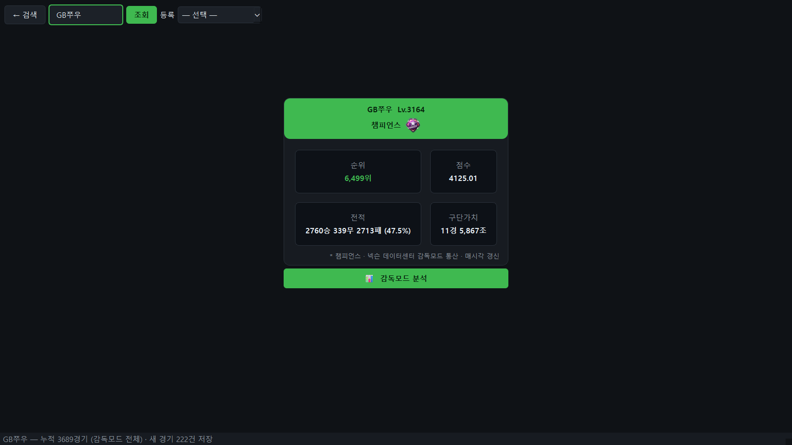
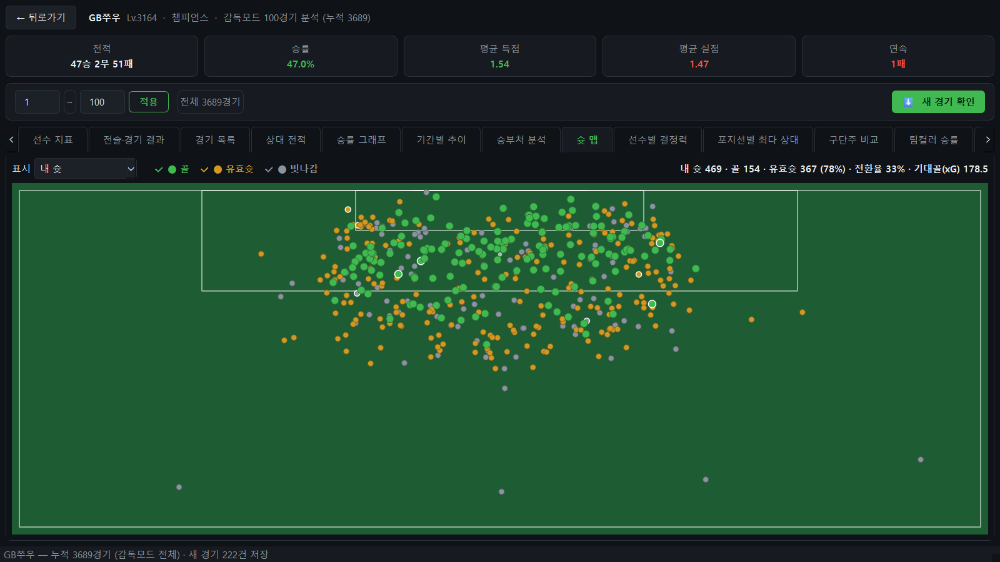
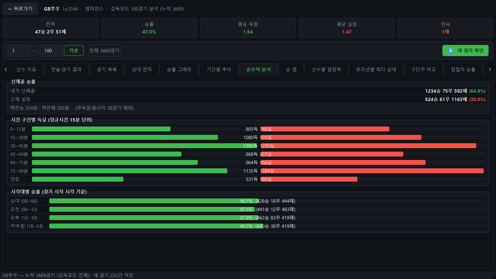
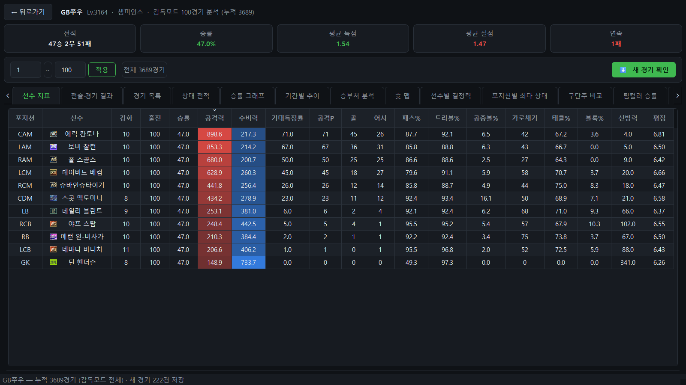

넥슨 오픈API로 EA SPORTS FC 온라인 감독모드 전적을 조회·집계하는 데스크톱 앱. 승률·선수 지표·전술 상성·슛 맵을 화면으로 본다.
닉네임을 넣으면 경기를 받아 와 16종의 분석 탭으로 펼친다. 공식이 공개되지 않은 값(공격력·수비력·기대득점률·선방력)은 실제 응답에서 역산해 맞췄다.
받은 경기는 로컬 SQLite 에 누적한다 — API 가 과거를 무한히 주지 않기 때문이다(실측: 약 한 달·3,024경기까지). 그래서 검색하는 순간이 곧 수집이고, 자주 보는 계정일수록 데이터가 길어진다.
카카오톡 오픈채팅 봇도 같은 DB 를 쓴다. 다만 조회 정책이 다르다 — 채팅방에서는 첫 응답이 수 분이면 못 쓰기 때문이다.




계산이 어려운 앱이 아니라서, 틀린 것도 계산이 아닌 쪽에서 나왔다. 기능 소개가 아니라 판단 기록이라 «이건 아직 안 쟀다» 도 그대로 적는다.